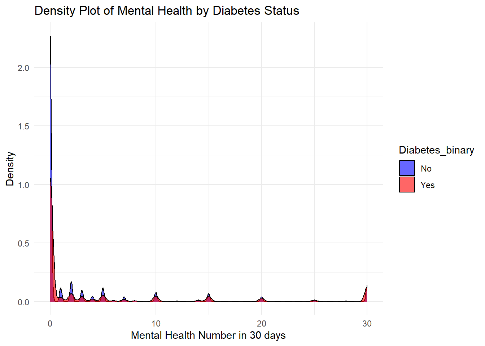
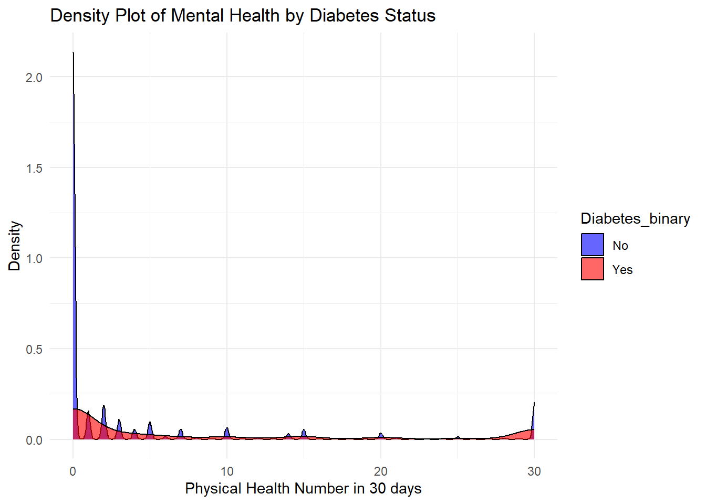
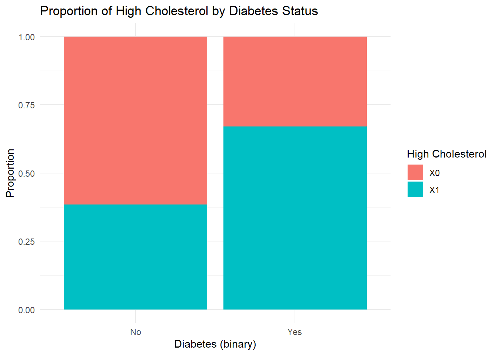

library(tidyverse)
library(corrplot)EDA
Setups
Introduction
About the Dataset
This dataset contains health indicators related to diabetes status.
Response variable:
Diabetes_binary, indicating the presence or absence of diabetes. 1 for individuals diagnosed with diabetes and 0 for individuals without diabetes.
Predictor Variables:
Read in the dataset
diabetes <- read_csv("diabetes_binary_health_indicators_BRFSS2015.csv")Rows: 253680 Columns: 22
── Column specification ────────────────────────────────────────────────────────
Delimiter: ","
dbl (22): Diabetes_binary, HighBP, HighChol, CholCheck, BMI, Smoker, Stroke,...
ℹ Use `spec()` to retrieve the full column specification for this data.
ℹ Specify the column types or set `show_col_types = FALSE` to quiet this message.Notice that all the variables are numeric, but most of them (except BMI, MentHlth, PhysHlth, Age) are actually factors with different levels. We need to convert them to factors.
# List of variables to remain numeric
numeric_vars <- c("BMI", "MentHlth", "PhysHlth", "Age")
# Convert all other variables to factors
diabetes <- diabetes |>
mutate(across(-all_of(numeric_vars), as.factor))
# Verify the conversions
str(diabetes)tibble [253,680 × 22] (S3: tbl_df/tbl/data.frame)
$ Diabetes_binary : Factor w/ 2 levels "0","1": 1 1 1 1 1 1 1 1 2 1 ...
$ HighBP : Factor w/ 2 levels "0","1": 2 1 2 2 2 2 2 2 2 1 ...
$ HighChol : Factor w/ 2 levels "0","1": 2 1 2 1 2 2 1 2 2 1 ...
$ CholCheck : Factor w/ 2 levels "0","1": 2 1 2 2 2 2 2 2 2 2 ...
$ BMI : num [1:253680] 40 25 28 27 24 25 30 25 30 24 ...
$ Smoker : Factor w/ 2 levels "0","1": 2 2 1 1 1 2 2 2 2 1 ...
$ Stroke : Factor w/ 2 levels "0","1": 1 1 1 1 1 1 1 1 1 1 ...
$ HeartDiseaseorAttack: Factor w/ 2 levels "0","1": 1 1 1 1 1 1 1 1 2 1 ...
$ PhysActivity : Factor w/ 2 levels "0","1": 1 2 1 2 2 2 1 2 1 1 ...
$ Fruits : Factor w/ 2 levels "0","1": 1 1 2 2 2 2 1 1 2 1 ...
$ Veggies : Factor w/ 2 levels "0","1": 2 1 1 2 2 2 1 2 2 2 ...
$ HvyAlcoholConsump : Factor w/ 2 levels "0","1": 1 1 1 1 1 1 1 1 1 1 ...
$ AnyHealthcare : Factor w/ 2 levels "0","1": 2 1 2 2 2 2 2 2 2 2 ...
$ NoDocbcCost : Factor w/ 2 levels "0","1": 1 2 2 1 1 1 1 1 1 1 ...
$ GenHlth : Factor w/ 5 levels "1","2","3","4",..: 5 3 5 2 2 2 3 3 5 2 ...
$ MentHlth : num [1:253680] 18 0 30 0 3 0 0 0 30 0 ...
$ PhysHlth : num [1:253680] 15 0 30 0 0 2 14 0 30 0 ...
$ DiffWalk : Factor w/ 2 levels "0","1": 2 1 2 1 1 1 1 2 2 1 ...
$ Sex : Factor w/ 2 levels "0","1": 1 1 1 1 1 2 1 1 1 2 ...
$ Age : num [1:253680] 9 7 9 11 11 10 9 11 9 8 ...
$ Education : Factor w/ 6 levels "1","2","3","4",..: 4 6 4 3 5 6 6 4 5 4 ...
$ Income : Factor w/ 8 levels "1","2","3","4",..: 3 1 8 6 4 8 7 4 1 3 ...Check on missing values in the dataset
sum(is.na(diabetes))[1] 0Data set does not contain any missing values.
Summaries
# Summary statistics for BMI, MentHlth and PhysHlth variables
summary(diabetes %>% select(BMI, MentHlth,PhysHlth)) BMI MentHlth PhysHlth
Min. :12.00 Min. : 0.000 Min. : 0.000
1st Qu.:24.00 1st Qu.: 0.000 1st Qu.: 0.000
Median :27.00 Median : 0.000 Median : 0.000
Mean :28.38 Mean : 3.185 Mean : 4.242
3rd Qu.:31.00 3rd Qu.: 2.000 3rd Qu.: 3.000
Max. :98.00 Max. :30.000 Max. :30.000 From the output above, the min BMI is 12 but the Max is 98. The number of days in the past 30days has mental health not good (MentHlth) vary from 0 as min to 30 as max. Same as PhysHlth which stands for number of days of physical health not good in the past 30 days.
Let’s calculate and plot the correlation between the numerical variables.
m <- cor(select(diabetes, c('BMI','MentHlth','PhysHlth')))
corrplot(m,method='color',
order='alphabet',
diag=FALSE,
col=COL2('PiYG'))It seems PhysHlth and MentHlth are moderately linear correlated, and also PhysHlth has some positive linear correlation with BMI.
Now, let’s see Diabetes_binary in the context of BMI ggplot()
# Create a box plot
ggplot(diabetes, aes(x = Diabetes_binary, y = BMI, fill=Sex)) +
geom_boxplot() +
labs(x = "Diabetes_binary", y = "BMI", title = "Box Plot of BMI by Diabetes Status") +
theme_minimal()
As shown in the above boxplot, BMI does not vary between different Diabetes_binary.
Let’s see Diabetes_binary with highBP and highChol
# Create a bar plot for Diabetes_binary and HighBP
ggplot(diabetes, aes(x = Diabetes_binary, fill = HighBP)) +
geom_bar(position = "fill") +
labs(x = "Diabetes_binary)", fill = "High BP", y = "Proportion", title = "Proportion of High BP by Diabetes Status") +
theme_minimal()
# Create a bar plot for Diabetes_binary and HighChol
ggplot(diabetes, aes(x = Diabetes_binary, fill = HighChol)) +
geom_bar(position = "fill") +
labs(x = "Diabetes (binary)", fill = "High Cholesterol", y = "Proportion", title = "Proportion of High Cholesterol by Diabetes Status") +
theme_minimal()
From the graphs plotted above, both with high HighChol and HighBP have a higher proportion of diabetes.